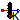
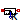
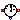
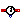
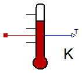
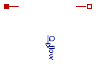
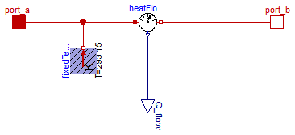

Extends from Modelica.Icons.SensorsPackage (Icon for packages containing sensors).
| Name | Description |
|---|---|
|  TemperatureSensor | Absolute temperature sensor in Kelvin |
|  RelTemperatureSensor | Relative Temperature sensor |
|  HeatFlowSensor | Heat flow rate sensor |
|  ConditionalFixedHeatFlowSensor | HeatFlowSensor, conditional fixed Temperature |

This is an ideal absolute temperature sensor which returns the temperature of the connected port in Kelvin as an output signal. The sensor itself has no thermal interaction with whatever it is connected to. Furthermore, no thermocouple-like lags are associated with this sensor model.
| Type | Name | Description |
|---|---|---|
| output RealOutput | T | |
| HeatPort_a | port |
model TemperatureSensor "Absolute temperature sensor in Kelvin"Modelica.Blocks.Interfaces.RealOutput T; Interfaces.HeatPort_a port; equation T = port.T; port.Q_flow = 0;end TemperatureSensor;
The relative temperature "port_a.T - port_b.T" is determined between the two ports of this component and is provided as output signal in Kelvin.
Extends from Modelica.Icons.TranslationalSensor (Icon representing a linear measurement device).
| Type | Name | Description |
|---|---|---|
| HeatPort_a | port_a | |
| HeatPort_b | port_b | |
| output RealOutput | T_rel |
model RelTemperatureSensor "Relative Temperature sensor" extends Modelica.Icons.TranslationalSensor;Interfaces.HeatPort_a port_a; Interfaces.HeatPort_b port_b; Modelica.Blocks.Interfaces.RealOutput T_rel; equation T_rel = port_a.T - port_b.T; 0 = port_a.Q_flow; 0 = port_b.Q_flow;end RelTemperatureSensor;

This model is capable of monitoring the heat flow rate flowing through this component. The sensed value of heat flow rate is the amount that passes through this sensor while keeping the temperature drop across the sensor zero. This is an ideal model so it does not absorb any energy and it has no direct effect on the thermal response of a system it is included in. The output signal is positive, if the heat flows from port_a to port_b.
Extends from Modelica.Icons.RotationalSensor (Icon representing a round measurement device).
| Type | Name | Description |
|---|---|---|
| output RealOutput | Q_flow | Heat flow from port_a to port_b |
| HeatPort_a | port_a | |
| HeatPort_b | port_b |
model HeatFlowSensor "Heat flow rate sensor" extends Modelica.Icons.RotationalSensor;Modelica.Blocks.Interfaces.RealOutput Q_flow "Heat flow from port_a to port_b"; Interfaces.HeatPort_a port_a; Interfaces.HeatPort_b port_b; equation port_a.T = port_b.T; port_a.Q_flow + port_b.Q_flow = 0; Q_flow = port_a.Q_flow;end HeatFlowSensor;

If useFixedTemperature = false, this sensor acts just as a normal HeatFlowSensor.
If useFixedTemperature = true, it is assumed that the connections to both heatPorts of this sensor are conditionally removed; in this case, the measured Q_flow is reported = 0 automatically. To avoid a singular equation system, the temperature of the sensor is set to 293.15 K.
| Type | Name | Default | Description |
|---|---|---|---|
| Boolean | useFixedTemperature | Fixed Temperature if true |
| Type | Name | Description |
|---|---|---|
| HeatPort_a | port_a | |
| HeatPort_b | port_b | |
| output RealOutput | Q_flow |
model ConditionalFixedHeatFlowSensor
"HeatFlowSensor, conditional fixed Temperature"
parameter Boolean useFixedTemperature(start=false)
"Fixed Temperature if true";
Modelica.Thermal.HeatTransfer.Interfaces.HeatPort_a port_a;
Modelica.Thermal.HeatTransfer.Interfaces.HeatPort_b port_b;
Modelica.Thermal.HeatTransfer.Sensors.HeatFlowSensor heatFlowSensor;
Modelica.Thermal.HeatTransfer.Sources.FixedTemperature fixedTemperature(final T(
displayUnit="K") = 293.15) if useFixedTemperature;
Blocks.Interfaces.RealOutput Q_flow;
equation
connect(heatFlowSensor.port_b, port_b);
connect(port_a, heatFlowSensor.port_a);
connect(fixedTemperature.port, heatFlowSensor.port_a);
connect(heatFlowSensor.Q_flow, Q_flow);
end ConditionalFixedHeatFlowSensor;